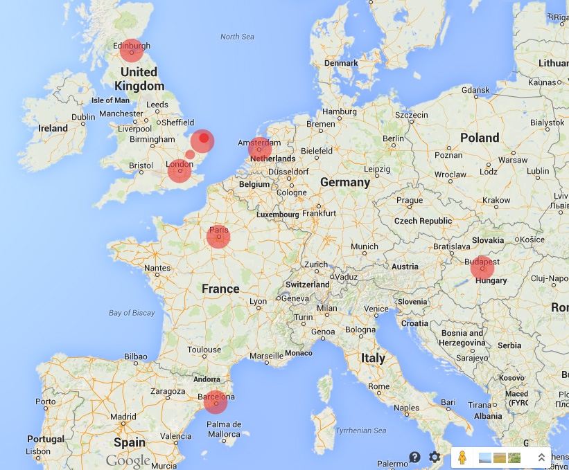
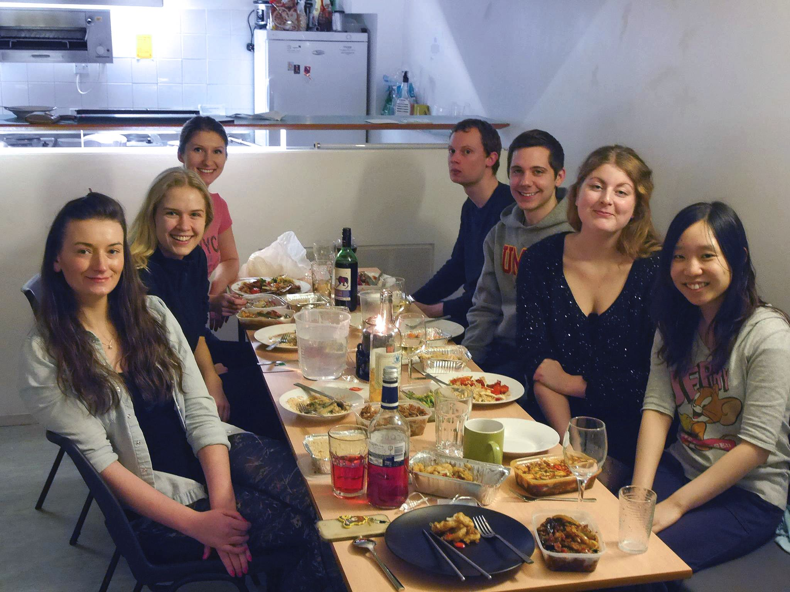
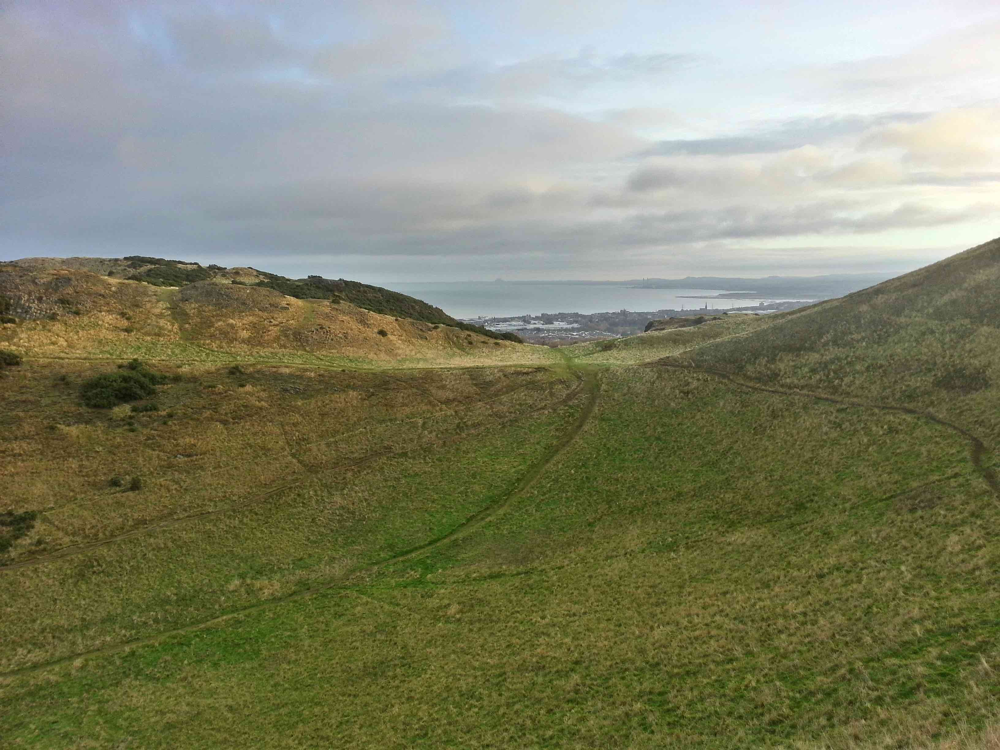

STUDY ABROAD
Norwich, Great Britain
Norwich, Great Britain
I found myself stranded in London or so it seemed.
To set the context of the situation, I had planned several weeks ahead my trip to Paris Gare du Nord from London. St. Pancras Station. I booked a hostel near the station through Expedia and reserved a spot with my American Express card. Since I was able to use my AMEX card through Expedia I assumed the place would just charge the same card. When I got to the hostel the desk clerk asked for payment and I was like has this room not already been paid for? He pointed out in very small print that the final price was to be paid upon arrival in cash or by Visa. Of course, I had a Visa debit card but for security reasons I only kept the necessary amount of money on the card in case it was pick-pocketed. I had no money in my Visa account at that time because the money wasn’t suppose to transfer until tomorrow, when I was in France.
After discovering this, I had to find an ATM that would accept AMEX cards. I tried the ATM at the hostel and no luck. It hit me there might be a money exchange service at St. Pancras so I tried that and the ATMs I found inside as well. Still no luck. I started to go into panic mode as it was nearly 7:00PM, I was alone and obviously had no other money.
I sat inside the terminal and started to think about what my next options were. Luckily I had my backpack with a laptop and cell phone with only a couple minutes remaining. That gave me an idea. I decided to go to the international section of St. Pancras station and sure enough there was an ATM that accepted American Express cards so I tried it. The machine kept asking for a PIN number and I had no idea what that was as I had never had to use this card for cash withdraw. I was able to use my cell phone and so I called the customer support line on the back of my card. From there I spoke with two separate employees and was finally able to setup a PIN and withdraw cash.
Later that night after I had taken money out and checked into the hostel I went for some cheap food, McDonalds. There was a homeless man with an empty Costa Coffee cup inside who I sat near. He was watching another homeless man through the window receive all kinds of food as they walked out of McDonalds. I could only assume he was asking the question why everyone was giving the other guy food and not him. So after finishing my meal, the homeless man inside still had nothing. I reached into my pocket and felt a few coins from when I had ordered. It wasn’t more than £4 or £5, but I gave it to him.
It was an interesting way to end the day as I had dealt with money problems that day myself, but it put things into perspective as this guy had no idea what or when his next meal would be.
Lessons learned: Always keep minutes on your phone when abroad. You might need them in an unexpected or unforeseen way. Know what your card customer support numbers are, especially international numbers. Always read the fine print on hostel bookings.
The buses in Norwich are probably my most negative memory of the city. They are expensive, £4.20 roundtrip, especially for a short ride into the city. There is a good chance your bus won’t be on time. On one occasion, I was taking the bus to the train station and the driver stopped to order tea mid-route. Another time I had to take a taxi because buses were full and they didn’t run frequent enough. If you happen to be in Norwich during warmer months, walk. Everything is usually 15 to 20-minutes from the city centre plus you'll see some great architecture, parks, and be able to discover the city better.
If you stay in Constable Terrace, at the end of campus, you will end up having a decent walk to the campus laundry room. It isn’t a pleasant thing to do when it is cold or raining, not to mention you have to carry it to and from your room across campus.
On my way home from Amsterdam, my flight made an emergency medical landing in Iceland. Apparently one of the 1st class passengers had a problem so we had to land in Iceland. It took an hour and a half to take off again. Many people had connecting flights, including me, after what was supposed to be a direct flight to the United States. Delta gave everyone who missed their flight a hotel voucher and rebooked them on the next available flight in the morning.
At Amsterdam Schipol, for international flights, security and some sort of passport control is at your gate. Each passenger is asked questions before they enter the security line. For some reason, the lady interviewing me the first wasn’t happy with my responses and asked for her superior to interview me. I had to go over the same questions the previous lady asked. At this point, I am thinking “How hard can it be for an American citizen to reenter the country?”. I would also like to point out the fact that she asked what nationality I was when she had my passport in her hands. Hello lady, my picture is on an American passport and this flight is going to the United States. I also have an American accent. Are these not indicators?
Anyway, needless to say, after traveling to several countries in Europe by train and airplane, America (the country I am a citizen of) was the hardest to enter.
Be careful when you book cheap KLM flights out of Norwich. You have a big chance of being overbooked as were several people bumped due to its fullness. Thankfully I wasn’t one of those people and made the last flight to Amsterdam for the evening.
Also, before entering security you have to pay a £10 “airport improvement fee”. The machines are located to the left of the entrance so make sure you pay this fee so you can get a scannable ticket. It would have been nice if one of the KLM staff at the ticket desk mentioned this when I checked in, however, they did not.
Lastly, the young woman at the KLM desk was going to charge me a 100 euro fee because I checked a second bag and my first suitcase was overweight. After explaining where I was traveling to and that I had an American Express Delta Skymiles card which allows me to have two checked bags for free on international flights she waived the fee.
Sidenote: If I would have been hateful or had a typical American attitude towards the KLM lady charging the extra baggage fee I can almost guarantee I would have had to pay the 100 euros.
I haven’t written much if at all, about the mail services in Europe. It could be useful as everyone wants to send stuff back home, especially when traveling to places such as Europe. My experience with the Royal Mail, the mail provider for the UK, was not great. I found the staff was unable to communicate effectively and at times were often rude. The service was not great either. 3 cards I had sent home never reached the senders and a medium parcel I had also sent was delivered soggy and with a sizable hole in the side. Needless to say, I would think twice, maybe three times before I mailed something through the Royal Mail agin.
On the other hand, postcards mailed from France and Hungary never reached their final destination either or at least not yet. I can’t say much about these services other than the clerks speak English. The best experience I had with mail abroad was in Spain. Stamps and mailboxes were easy to find, the postcards shipped fast and they were actually received.
Overall, if you are traveling in Europe, you may want to skip postcard sending as it becomes more of a money trap than it is actually worth. You could just as easily get whomever a small gift for the same price as a stamp and postcard.

In my last few days, I managed to do most of the things I never got around to when I first came to Norwich — get my picture in front of the Sainsbury Centre and the ziggurats. I also made my way around the city to visit the market, castle, and broads one last time.
I went to the cathedral of Saint John the Baptist, a Roman gothic-style Catholic cathedral, for the UEA Christmas choir concert. It included 2 hours of singing and of course you could distinctly tell it was a Catholic service as everyone was asked to stand and sit about every other song. For only £10 it was an interesting experience.
That time I went to London for a field trip. Enough said?

Our flat was able to have dinner together before everyone left for Christmas break. Take away Thai was our choice of food.

I recently spent 3 days in Edinburgh — the capital of Scotland. It was interesting to see the cultural differences between the English and the Scottish but between you and I, the Scottish are more friendly. I will leave it at that.
During my time in Scotland, I was able to see all the major monuments, museums and parks. The town is spread out, but everything is central to the train station because it sits directly in the middle; Everything is a short walk in relation to it. Calton Hill was no exception. It held a majority of the oldest monuments in Edinburgh and provided a 360-degree view of the town along with a large portion of the North Sea, which I must say was pretty incredible. Other places included the Christmas Market, Edinburgh Castle, National Scottish Museum, the National Galleries and Holyrood Park. I can’t say I had a bad experience with any of these places, but it is significant to understand how expensive a trip to the castle will set you back. $25 per person to be exact. In addition, the National Galleries were spread out across the town so for instance the main gallery is next to the train station but the portrait gallery is about a 10-minute walk away. I would highly recommend the National Scottish Museum as it is put together extremely well and the architecture mix is quite interesting. Plus it has a huge range of objects, new and (extremely) old. It could be compared to the Natural History Museum in New York, but it [the New York museum] would be put to shame.
Of course Scotland is known for its extremely beautiful land, especially in the Highlands, and so I had to visit the best viewing spot in Edinburgh, Holyrood Park. This is where I spent a majority of my time as I visited it twice so I could take it all in. Mudded, grassy and stone paths at high angles and elevations curved along the edge of the land to lead me near the peak. After taking a few breathers on the way, I finally reached the top and the view was indescribable, pictures have a hard time capturing it as well. There is something about the struggled journey to the top - the coldness in the air and the extreme wind across your uncovered body parts - and then finally seeing the land and sea while standing on the peak. The peak gives the best possible view as you are able to see other mountains in the far off distance among the pasture, city, and sea.
At the end of my trip I found myself wanting to see more of the landscape through hiking and so I would definitely make a return trip to visit the Highlands.
Observations: The sound of bagpipes, live or recorded, draws tourists like McDonalds attracts obese children. The Bank of Scotland has interesting money designs, distinctly different than English pounds.
Photos at https://www.flickr.com/photos/tsanguinette/
Social Media